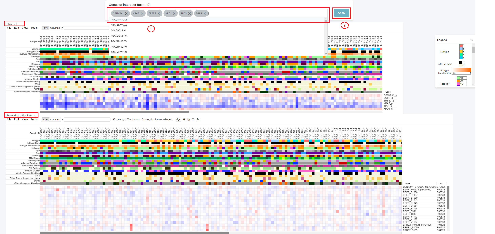
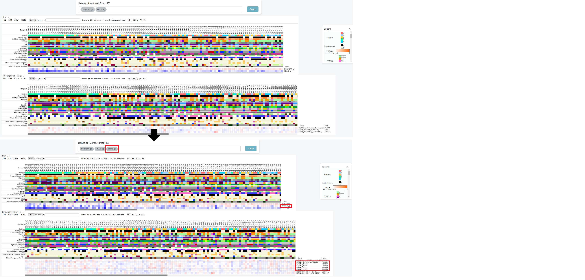
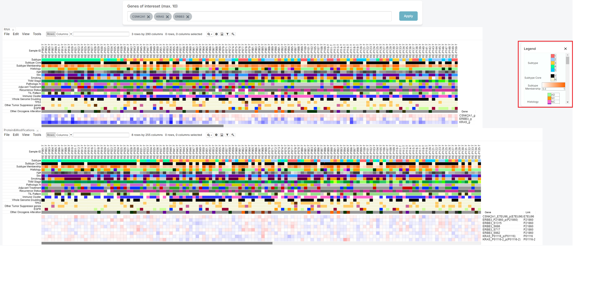
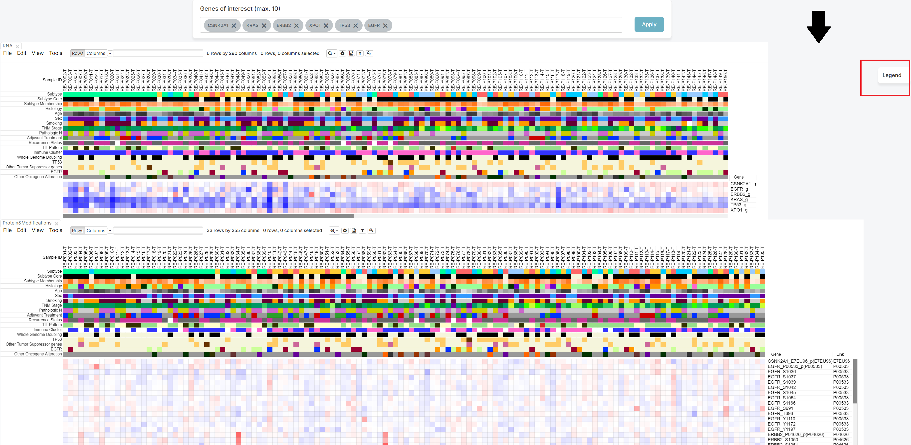
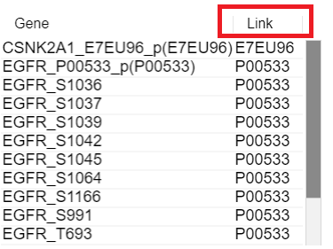
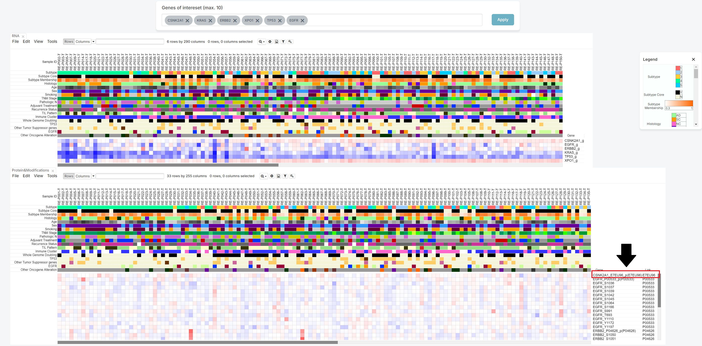
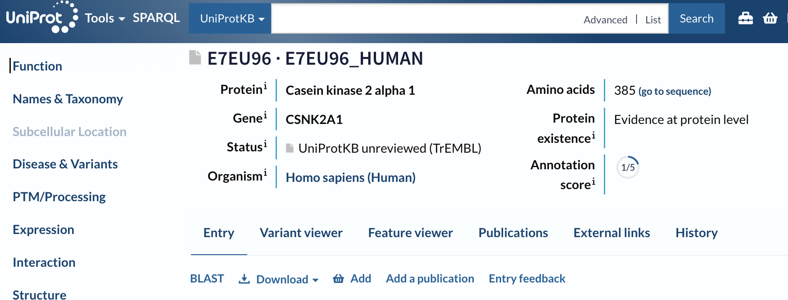
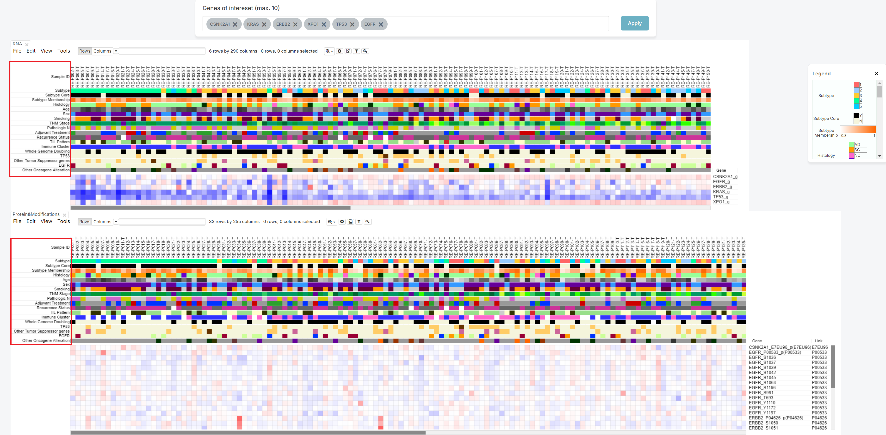
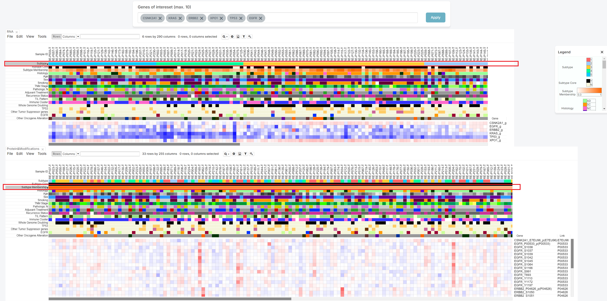

The NMF cluster page displays quantitative values for both normal and tumor patients.
The quantitative value of RNA is represented as log(TPM+1), while the quantitative values of Protein and Modifications (such as Acetylation and Phosphorylation) are represented as ratio values.
Since the calculation methods differ, RNA and other quantitative values are displayed in two separate heatmaps.
If you want to check some genes, then insert genes in blank of 'Genes of interest' (1).
After inserting it, please push the 'Apply' button (2).
Then, you can check the heatmap which show the relationship between patient with chosen genes.
The legend is initially expanded when the screen opens. You can hide it by clicking the 'X' button, or expand it again by clicking the 'Legend' button, depending on your preference.
If you click the 'X' button, you can get hide the legend.
You can see the Link column on the right side.
It means the Uniprot ID which have relationship with gene.
It has a hyperlink to connect Uniprot site.
Therefore, if you click that ID, you can move to Uniprot site.
If you want to sort by the value of meta information, click the meta column name. The sorting function operates separately for each of the two heatmaps.
The first click on the same column name will sort in ascending order, the second click will sort in descending order, and the third click will disable the sorting function.
| Subtype | Korean NSCLC Subtype (1 to 5). |
|---|---|
| Subtype Core | Korean NSCLC Subtype (1 to 5) with only subtype core sample. The subtype core is determined based on each sample’s subtype membership score. Samples with a membership score of 0.5 or higher are classified as the core of the subtype and labeled “Y”, while those with a score below 0.5 are labeled “N”. |
| Subtype Membership | Subtype membership score. |
| Histology | Name of pathological diagnosis classification for using this study. (AD :Adenocarcinoma , SC : Squamous cell carcinoma, MA : Mucinous adenocarcinoma, NC : Large cell neuroendocrine carcinoma and others) |
| Age | Age |
| Sex | Sex (F: Female, M: Male). |
| Smoking | Status of smoking history on samples. (Cr: current smoker; Ex: quit smoking more than a year before sugery; N: non-smoker; NA: no information) |
| TNM Stage | The 8th Edition of the American Joint Committee on Cancer (AJCC-TNM) stage. |
| Pathologic N | Status of node metastasis on samples. (N0: no lymph node metastasis; N1: eastern pulmonary lymph node metastasis ; N2: eastern mediastinal lymph node metastatis) |
| Adjuvant Treatment | Status of adjuvant treatment on samples. (CTx: Chemotherapy; RTx: Radiation therapy; None: no treatment) |
| Recurrence Status | Status of recurrence on samples. (1: Recur occur; 0: Not recur occur; NA: No data) |
| TIL Pattern | The pattern of tumor infiltrating lymphocytes (TIL). |
| Immune Cluster | Cell type-based Immune Cluster (Hot, Cold). |
| Whole Genome Doubling | Presence of whole genome doubling. |
| TP53 | TP53 mutation status which contains CNV loss and truncating mutation or both. |
| Other Tumor Suppressor genes | Other tumor suppressor genes mutation status which contains CNV loss and truncating mutation or both. Other tumor suppressor genes consisted of CDKN2A, STK11, KEAP1, RB1, PPP2R1A, and SMARCA4. |
| EGFR | EGFR mutation status which contains L858R, exon19 deletion, other indels and other SNVs. |
| Other Oncogene Alteration | Other oncogenes mutation or fusion which contains KRAS, PIK3CA ERBB2, MET, ALK, ROS1, RET. |
It consists of Morpheus functions.
Therefore, if you want to check how to use tab function, please follow the Morpheus tutorial.